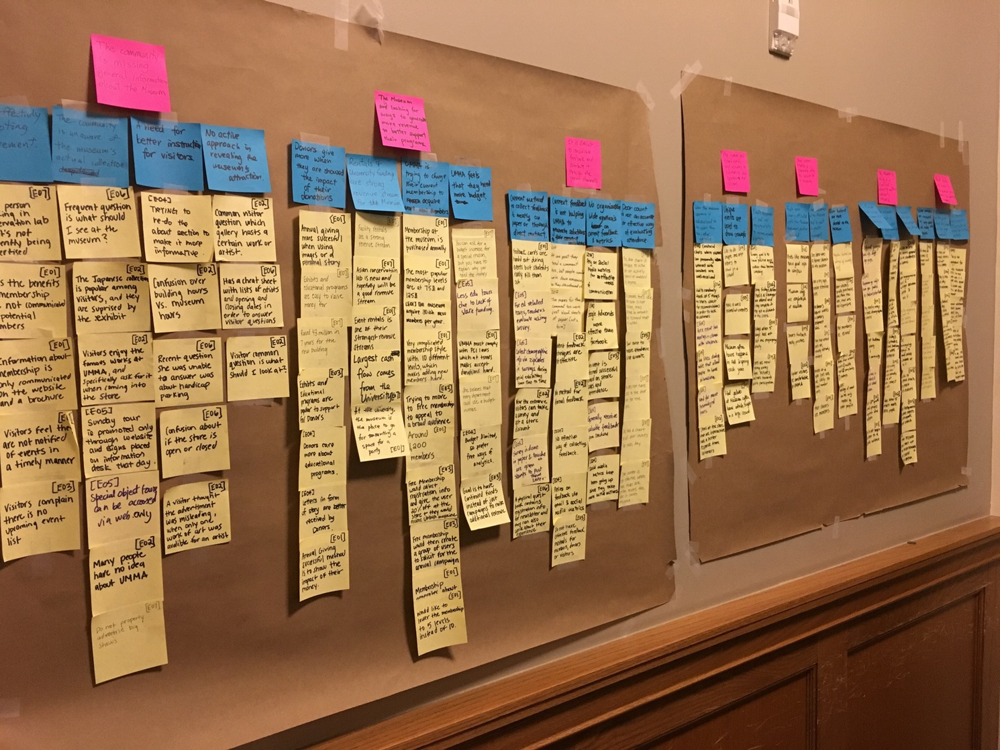
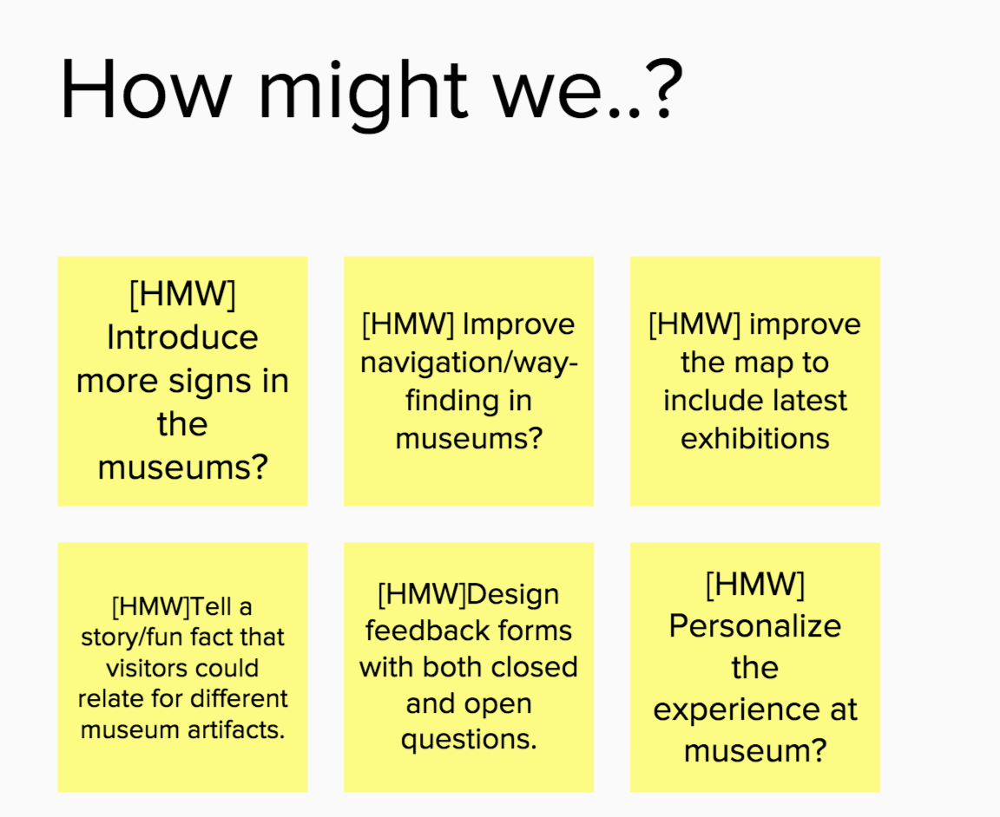
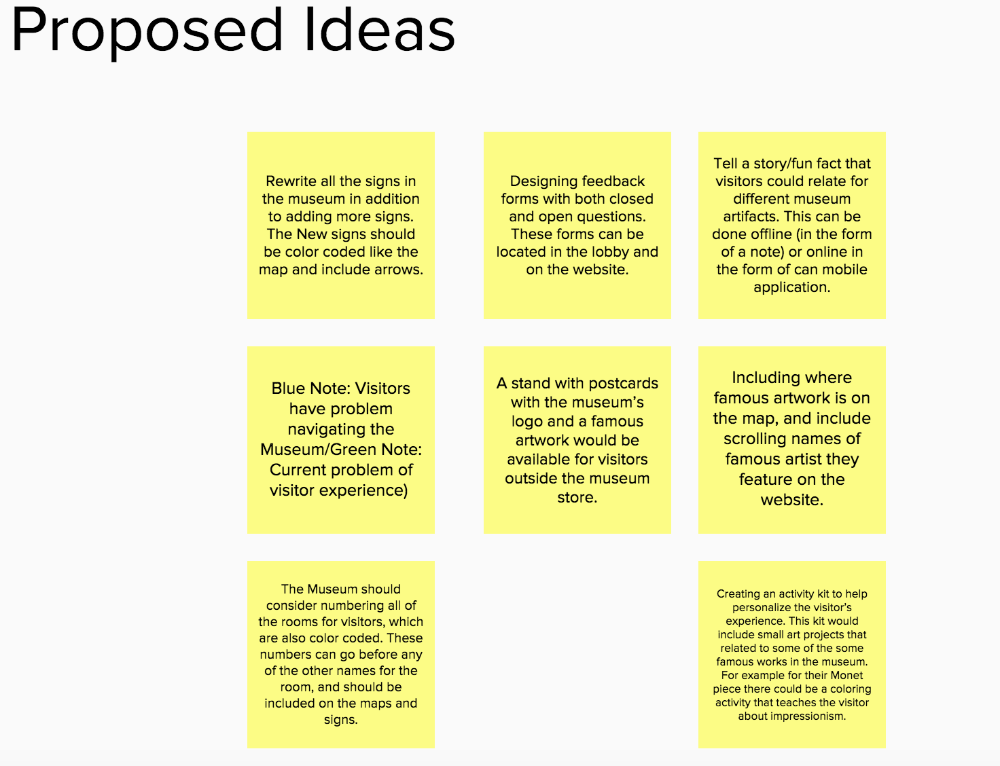

Improving Visitor Experience at UMMA
As a part of our Contextual Inquiry (SI-501) course, we had to work with the clients to work with them and recommend them solutions. The client we got was University of Michigan Museum of Art (UMMA). We did background research and interviews with the client employees and customers to study in detail about the problem and issues.
Problem
The client currently wants us to improve the visitor experience in both physical and virtual space. They want to encourage return visits and make on-site experience comfortable and easy. Currently, museum has visitor desks at the entrance which have maps and other informational resources. However, because of lack of personal interaction at information desks, many visitors get confused and end up going to souvenir shops to ask about location questions and other doubts. We have been asked to research on current models that other university museums have adopted. We have to find ways in which UMMA can enhance its presence within the student community.
Approach
For this project, we tried to focus on needs of the client by doing Contextual Inquiry. Overall we conducted 7 interviews with different employees such as Communications Manager, Curator, Administration Officer, Visitor experience manager. We collected the qualitative data from the interview and analyzed it in the form of Affinity Diagrams. From those diagrams we identified user needs and patterns. Finally, we recommended them our proposed design solution.
Contextual Inquiry
This was my first experience doing contextual inquiry in a formal way with a client. We interviewed each employee in a team of two (interviewer + notetaker). I was primary interviewer and notetaker in 3 interviews each. Since, each of us had background research on a particular topic related to museum, we used that knowledge to frame our questions in the interview. For example, I interviewed the person in charge of Curation, Teaching and learning because that was my topic of research. This made me really confident while conducting interviews and asking follow up questions, thereby becoming actively engaged in the conversation.
Analysis: Affinity Diagrams
We found several broad issues from our afifnity analysis:
- Museum used unique events to draw crowd's attention.
- Personalized experience lead to a better vision experience.
- People more closely associated with the museum tent to give a postive feedback.
- There was a need for better instruction for visitors.
- There wasn’t any formal information desk for the museum. When people were confused about navigation or event related question, they usually headed towards the museum store.
- Community was unaware about the museums actual collection.
- Museum was confused about the implementation of technology to enhance the visitor’s experience.
- Museum was interested in generating revenue streams from other sources like radio and other collaborative events.
Brainstorming Ideas
After we had our issues or challenges, we started brainstorming potential design solutions. Most of these solutions were based on the issues and problems faced by the client. We used “How Might We” approach from Google design sprints to come up with design problems. We narrowed down our focus to navigation and way-finding related issues.
Our Proposal
For the scope of this project, we had to propose solutions to the client. We recommended several solutions to the client in terms of way-finding, events , signage etc.
